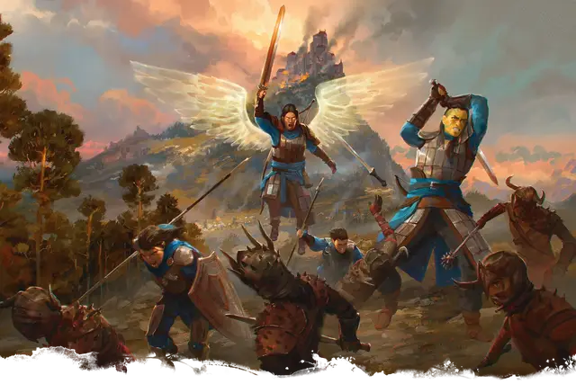

Боец
Warrior
Средний Гуманоид (1-й уровень)

Класс Доспеха 16 (кольчужная рубаха, щит)
Хиты 13 (2к8 + 4)
| мод | спас | ||
|---|---|---|---|
| СИЛ | 15 | +2 | +2 |
| ЛОВ | 13 | +1 | +1 |
| ТЕЛ | 14 | +2 | +4 |
| мод | спас | ||
|---|---|---|---|
| ИНТ | 10 | +0 | +0 |
| МДР | 12 | +1 | +1 |
| ХАР | 10 | +0 | +0 |
Навыки Атлетика +4, Восприятие +3, Выживание +3
Чувства пассивное Восприятие 13
Языки Общий, и ещё один язык
Опасность —
Особенности
Роль воина. : Боец имеет одну из следующих особенностей на ваш выбор:
• Атакующий. Боец получает бонус +2 к своим атакам.
• Защитник. Боец получает действие реакции Защита, описанную ниже.
Владение. Напарник владеет любыми доспехами, оружием и инструментами, входящими в его блок статистики. Кроме того, эксперты могут использовать простое оружие, рапиры, короткие мечи и легкие доспехи, заклинатели - простое оружие и легкие доспехи, а бойцы - простое и воинское оружие, щиты и все виды доспехов.
УРОВНИ напарников. Ваш напарник начинает как персонаж 1-го уровня. По мере того, как вы вместе участвуете в приключении, ваш напарник получает очки опыта и достигает новых уровней так же, как и персонаж игрока. Когда напарник получает уровень, посмотрите на таблицу ниже и обратитесь к строке нового уровня, которая покажет его новый максимум хитов и новые особенности. Мастер может ввести в игру напарника с уровнем выше 1-го, используя максимальные хиты для подходящего уровня в соответствующей таблице ниже. В этом случае напарник получит все особенности этого уровня, а также всех предыдущих уровней.
| Уровень | Хиты | Новые способности |
| 2 | 19 (3к8 + 6) | Второе дыхание. В свой ход боец может бонусным действием восстановить кол-во хитов в размере 1к10 + его уровень. Использовав это умение, ему нужно завершить короткий, либо продолжительный отдых, чтобы получить возможность использовать его снова. |
| 3 | 26 (4к8 + 8) | Улучшенные критические попадания. Броски атаки бойца считаются критическим попаданием при выпадении «19» или «20» на к20. |
| 4 | 32 (5к8 + 10) | Увеличение характеристик. Сила бойца увеличивается на 2, что увеличивает модификатор на 1, таким образом увеличьте следующие значения на 1: навык Атлетика и бонусы атаки и попадания бойца рукопашным оружием. |
| 5 | 39 (6к8 + 12) | Бонус мастерства. Бонус мастерства бойца увеличивается на 1, поэтому внесите следующие изменения в блок характеристик: увеличьте бонусы в спасбросках и навыках на 1, увеличьте пассивное Восприятие на 1 и увеличьте бонусы попадания оружием на 1. |
| 6 | 45 (7к8 + 14) | Дополнительная атака. Когда боец совершает в свой ход действие Атака, он совершает две атаки вместо одной. |
Действия
Длинный меч. . Рукопашная атака оружием: +4 к попаданию, досягаемость 5 фт. , одна цель. Попадание: 6 (1к8 + 2) рубящего урона или 7 (1к10 + 2) рубящего урона при атаке двумя руками.
Длинный лук. . Дальнобойная атака оружием: +3 к попаданию, дистанция 150/600 фт., одна цель. Попадание: 5 (1к8 + 1) колющего урона.
Реакции
Защита (только для Защитника). Боец накладывает помеху на атаку существа, находящегося в радиусе 5 футов от него, если целью атаки не является сам боец. Боец должен видеть нападающего.
Описание
Параметры напарников представляют собой мини-листы персонажей. Блок характеристик содержит значения навыков и хитов, а также действия, которые напарник, скорее всего, предпримет в бою. Как и любой персонаж, соратник может использовать варианты действий из правил для сражений.
Эти блоки актуальны для любой расы. Мастер может усилить напарника соответствующими расовыми чертами, указанными в «Книге игрока».